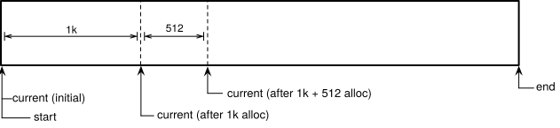

Lab 3: FAT32 Filesystem¶
Handed out: Tuesday, February 11, 2020
Due: Monday, March 2, 2020
Introduction¶
In this assignment, you will enable the use of Rust’s
collections
module (Vec, String, HashMap, and friends) by writing
a memory allocator, implement the FAT32 file system, implement a
Rust interface for a driver for the Raspberry Pi’s EMMC (SD card
controller), and extend your shell with cd, ls, pwd,
and cat, commands.
Phase 0: Getting Started¶
Fetch the update for lab 3 from our git repository to your development machine.
$ git fetch skeleton
$ git merge skeleton/lab3
This is the directory structure of our repository. The directories you will be working on this assignment are marked with *.
.
├── bin : common binaries/utilities
├── doc : reference documents
├── ext : external files (e.g., resources for testing)
├── tut : tutorial/practices
│ ├── 0-rustlings
│ ├── 1-blinky
│ ├── 2-shell
│ └── 3-fs : questions for lab3 *
├── boot : bootloader
├── kern : the main os kernel *
└── lib : required libraries
├── fat32 *
├── pi *
├── shim
├── stack-vec
├── ttywrite
├── volatile
└── xmodem
You may need to resolve conflicts before continuing. For example, if you see a message that looks like:
Auto-merging kern/src/main.rs
CONFLICT (content): Merge conflict in kern/src/main.rs
Automatic merge failed; fix conflicts and then commit the result.
You will need to manually modify the main.rs file to resolve
the conflict. Ensure you keep all of your changes from lab 2.
Once all conflicts are resolved, add the resolved files with
git add and commit. For more information on resolving merge
conflicts, see this tutorial on
githowto.com.
make transmit command¶
Since you’ve finished writing the bootloader in the previous lab,
you are ready to use the command make transmit
that builds the kernel binary and calls ttywrite
to send it to the Raspberry Pi for the bootloader to load. As a
result, assuming the bootloader is installed as kernel8.img,
you will be able to test new binaries simply by resetting your
Raspberry Pi and running make transmit.
You should have installed ttywrite utility in the previous lab.
If you didn’t for some reason,
install it now by running cargo install --path .
in the lib/ttywrite directory.
Ensure that the utility was properly installed by running ttywrite --help.
The make transmit target is configured to write to
/dev/ttyUSB0 by default. If your TTY device
differs, modify the TTY_PATH declaration on line 7 of
kern/Makefile appropriately.
Add your user to dialout group
If you are experiencing a permission issue when accessing the TTY, please try adding your user to the dialout group.
sudo usermod -a -G dialout $USER
sudo reboot
Compilation errors after merging lab3
We provide a template code for the final phase of lab3, which contains lots of uncompleted code. When you try to compile your code while working on this lab, you will see the compiler complains about some of the code you just merged. You can comment the offensive lines of the code until we fix them later. For instance, you may want to disable the file system component when working in phase 1. Make sure you only comment out minimum amount of the code!
The ALLOCATOR.initialize() call panics!
Your shell should continue to function as before. If you test
the make install target now, however, you’ll likely find
that you shell appears to no longer work. The likely culprit is
an ALLOCATOR.initialize() call preceding your shell()
call. Because there is no memory allocator yet, the call will
lead to a panic!(), halting your system without warning.
We’ll fix this soon. Feel free to comment out the line
temporarily to ensure everything is working as expected.
Phase 1: Memory Lane¶
In this phase you will implement two memory allocators: a simple
bump allocator and a more fully-featured bin allocator. These
will immediately enable the use of heap allocating structures such
as Vec, Box, and String. To determine the available
memory on the system for allocation, you will read ARM tags
(ATAGS).
You will also implement the panic handler to
properly handle panic! calls.
Subphase A: Panic!¶
In this subphase you will implement the panic handler.
You will be working in kern/src/init/panic.rs.
Error Handling in Rust¶
Rust has two major categories of errors: recoverable and unrecoverable.
Rust represents recoverable errors with Result<T, E> type.
On the other hand,
when a Rust program encounters an unrecoverable error,
it stops the program execution altogether.
This behavior is called panic! in Rust terminology.
When targeting standard operating systems, the Rust compiler will generate a program that prints the backtrace and sets the process exit code on panic. However, when the Rust compiler is instructed to compile a Rust program for a target without operating system support, such as we do for our Raspberry Pi, the compiler requires the manual implementation of the panic handler.
A panic handler is a function that is called when a panic! occurs.
It has a type of fn panic(info: PanicInfo) -> !,
which means it takes a PanicInfo
as an argument and never returns.
PanicInfo struct contains the information of
the file name, line number, and column where the panic! occurred.
We’ve provided the panic handler that loops indefinitely
in kern/src/init/panic.rs.
You will extend this panic implementation
so that it logs useful information to the console.
Implement the panic handler¶
Implement the panic function now. Your implementation
should print the passed in information to the console and then
allow the loop already in place to run.
You’re free to implement the function as you like.
As an example,
our implementation takes inspiration from Linux kernel
oops messages:
(
( ) )
) ( (
( `
.-""^"""^""^"""^""-.
(//\\//\\//\\//\\//\\//)
~\^^^^^^^^^^^^^^^^^^/~
`================`
The pi is overdone.
---------- PANIC ----------
FILE: src/kmain.rs
LINE: 40
COL: 5
index out of bounds: the len is 3 but the index is 4
Test your new panic implementation by having your kernel
panic. Recall that you can use the new make install target to
compile and send the kernel to your Raspberry Pi. Note that the
ALLOCATOR.initialize() call already panic!s, so you
shouldn’t need to make any changes. Ensure this function is called
before your shell().
Then, try making your kernel panic in other ways: a rogue
unwrap(), an explicit panic!(), or an unreachable!():
ensure they all work as expected. When you’re satisfied with your
implementation, continue to next the subphase.
Subphase B: ATAGS¶
In this subphase, you will implement an iterator over the ARM tags
(ATAGS) loaded by the Raspberry Pi’s firmware. You will use your
iterator to find the ATAG that specifies how much memory is
available on the system. You will be working in the
lib/pi/src/atags directory and kern/src/allocator.rs.
ARM Tags¶
ATAGS, or ARM tags, are a mechanism used by ARM bootloaders and firmware to pass information about the system to the kernel. Linux, for example, can use ATAGS when configured for the ARM architecture.
The Raspberry Pi places an array of ATAG structures at address 0x100. This is the structure of ATAGS, in Rust syntax:
#[repr(C)]
struct Atag {
dwords: u32,
tag: u32,
kind: Kind
}
Each ATAG begins with an 8 byte header, dwords and tag.
The dwords field specifies the size of the complete ATAG in
double words (32-bit words) and includes the header. Thus the
minimum size is 2. The tag field specifies the type of
the ATAG. There are 10 different types of specified tags, all
documented in the ATAGS
reference.
The Raspberry Pi only makes use of four. These are documented
below:
Name |
Type ( |
Size |
Description |
|---|---|---|---|
0x54410001 |
5 or 2 if empty |
First tag used to start list |
|
0x00000000 |
2 |
Empty tag used to end list |
|
0x54410002 |
4 |
Describes a physical area of memory |
|
0x54410009 |
variable |
Command line to pass to kernel |
The type of tag determines how the data after the header should be interpreted.
In our skeleton code,
the data following the header is represented as a field named kind
which is a union of different kind of tags.
Clicking on the name of the tag in the table above
directs you to the reference for that particular tag which
includes the layout of the tag’s data.
The MEM tag data, for instance, is structured as below:
struct Mem {
size: u32,
start: u32
}
Tags are laid out sequentially in memory with zero padding between
each tag. The first tag is specified to be a CORE tag while
the final tag is indicated by the NONE tag. Other tags can
appear in any order. The dwords field is used to determine the
address of the adjacent ATAG. The diagram below depicts the
general layout.
Unions & Safety¶
The raw ATAG data structures are declared in lib/pi/src/atags/raw.rs.
The main declaration, copied below, makes use of a Rust union.
Rust’s unions are identical to C unions:
they define a structure where all fields share common storage.
pub struct Atag {
dwords: u32,
tag: u32,
kind: Kind
}
pub union Kind {
core: Core,
mem: Mem,
cmd: Cmd
}
In effect, unions allow memory to be cast into arbitrary
structures without regard for whether the cast is correct. As a
result, accessing union fields in Rust is unsafe.
We’ve already handled most of the unsafe in the atags
module for you, so you don’t need to worry about handling unions
yourself. Nonetheless, exposing unions to end-users of our pi
library is a bad idea. Because of this, we’ve declared a second
Atag structure in lib/pi/src/atags/atag.rs. This structure is
entirely safe to use and access. This is the structure that the
pi library will expose. When you finish the implementation of
the atag module later in this subphase, you’ll write
conversions from the raw structures to the safe structures.
Why is it a bad idea to expose unions to end-users? (enduser-unsafe)
We’re going through a lot of effort to expose a safe interface to unsafe data structures. You’ll see this over and over again in Rust, with the standard library as a prime example. What benefit is there to exposing safe interfaces to unsafe structures or operations in Rust? Could we yield the same benefits in a language like C?
Command Line Arguments¶
The CMDLINE tag deserves special attention. Its declaration is:
struct Cmd {
/// The first byte of the command line string.
cmd: u8
}
As indicated by the comment, the cmd field holds the first
byte of the command line string. In other words, &cmd is a
pointer to a null-terminated, C-like string. The safe version of
the Cmd tag is Cmd(&'static str). When you write the
conversion from the raw to safe version of the Cmd tag,
you’ll need to determine the size of the C-like string by
searching for the null terminator in the string. You’ll then need
to cast the address and size into a slice using
slice::from_raw_parts() and finally cast the slice into a
string using str::from_utf8() or
str::from_utf8_unchecked().
You used both of these functions before in lab 2.
Implement atags¶
You’re ready to implement the atags module in
lib/pi/src/atags. Start by implementing the raw::Atag::next()
method in atags/raw.rs. The method determines the address of
the ATAG following self and returns a reference to it. You’ll
need to use unsafe in your implementation. Then implement the
helper methods and conversion traits from raw structures to safe
structures in atags/atag.rs. You should only need to use
unsafe when implementing From<&'a raw::Cmd> for Atag.
Finally, finish the implementation of the Iterator trait for
Atags in atags/mod.rs. This requires no unsafe.
Hint
You can convert from x: &T to *const u32 using
x as *const T as *const u32.
Hint
You can convert from x: *const T to &T using &*x.
However, this conversion is extremely unsafe.
Make sure that you don’t violate the alias rule of Rust references.
Testing atags¶
Test your implementation by running cargo test command in lib/pi
directory.
Then, test your ATAGS implementation with the RPi board
by iterating over all of the ATAGS
and debug printing them to your console in
kern/src/main.rs.
You should see at least one of each of the three non-NONE tags.
Verify that the value of each ATAG matches your expectations.
Once your implementation performs as expected, proceed to the next subphase.
Hint
The {:#?} format specifier prettifies the debug
output of a structure.
What does the CMDLINE ATAG contain? (atag-cmdline)
What is the value of the command line string in the
CMDLINE ATAG found on your Raspberry Pi? What do you
think the parameters control?
How much memory is reported by the MEM tag? (atag-mem)
What is the exact start address and size of the available
memory reported by the MEM ATAG? How close is this to
the Raspberry Pi’s purported 1GB of RAM?
Subphase C: Warming Up¶
In this subphase, we’ll set the stage to write our two memory
allocators in the next subphases. You’ll implement two utility
functions, align_up and align_down, that align addresses
to a power of two. You’ll also implement the memory_map
function that returns the start and end address of the available
memory on the system. Your memory_map function will be used by
both memory allocators to determine the available memory for
allocation.
Alignment¶
A memory address is n-byte aligned if it is a multiple of n.
Said another way, a memory address k is n-byte aligned if
k % n == 0. We don’t usually need to be concerned about the
alignment of our memory addresses, but as budding system’s
programmers, we do! This is because hardware, protocols, and other
external forces enjoin alignment properties. For example, the ARM
32-bit architecture requires the stack pointer to be 8-byte
aligned. The AArch64 architecture, our operating system’s
architecture of choice, requires the stack pointer to be 16-byte
aligned; x86-64 requires the same alignment. Page addresses used
for virtual memory typically need to be 4k-byte aligned. And there
are many more examples, but it suffices to say that alignment of
memory addresses is important.
In C, the alignment of a memory address returned from a libC
allocator is guaranteed to be 8-byte aligned on 32-bit systems and
16-byte aligned on 64-bit systems. Beyond this, the caller has no
control over the alignment of the returned memory address and must
fend for themselves (POSIX functions like posix_memalign later
corrected for this).
Why did C choose these alignments? (libc-align)
The choice to guarantee 8 or 16-byte alignment from libC’s
malloc is not without reason. Why did libC choose these
particular alignment guarantees?
Recall the signatures for malloc() and free() in C:
void *malloc(size_t size);
void free(void *pointer);
In contrast, Rust’s low-level, unsafe alloc and dealloc methods
in GlobalAlloc trait have the following signatures:
// `layout.size()` is the requested size, `layout.align()` the requested alignment
unsafe fn alloc(&self, layout: Layout) -> *mut u8;
// `layout` should be the same as was used for the call that returned `ptr`
unsafe fn dealloc(&self, ptr: *mut u8, layout: Layout)
Note that the caller can specify the alignment with the
layout argument,
which is defined by two parameters, size and align.
As a result, the
onus is on the allocator, not the caller, to return a properly
aligned memory address.
When you implement memory allocators in
the next phase, you’ll need to ensure that the address you return
satisfies the condition specified by the layout parameter.
The second thing to note is that the dealloc function,
analogous to C’s free, requires the caller to pass in the
Layout used for the original call to alloc. As a result,
the onus is on the caller, not the allocator, to remember the
requested size and alignment of an allocation.
Size and alignment guarantee in Rust
In Rust, all layouts must have non-negative size and a power-of-two alignment; These conditions are checked when a layout is created.
Why do you think Rust split responsibilities in this way? (onus)
In C, the allocator has fewer restrictions on the alignment of memory addresses it returns but must record the size of an allocation for later use. The inverse is true in Rust. Why do you think Rust chose the opposite path here? What advantages does it have for the allocator and for the caller?
Utilities: align_up and align_down¶
When you implement your allocators in the next subphases, you’ll
find it useful to, given a memory address u, be able to
determine the first address >= or <= u that is aligned
to a power of two. The (unimplemented) align_up and
align_down functions in kernel/src/allocator/util.rs do
exactly this:
/// Align `addr` downwards to the nearest multiple of `align`.
/// Panics if `align` is not a power of 2.
fn align_down(addr: usize, align: usize) -> usize;
/// Align `addr` upwards to the nearest multiple of `align`.
/// Panics if `align` is not a power of 2
/// or aligning up overflows the address.
fn align_up(addr: usize, align: usize) -> usize;
Implement these functions now. You can unit test your
implementations by calling make test or cargo test in the
kernel directory. This will run the tests in
kern/src/allocator/tests.rs. All of the align_util unit
tests should pass.
Testing
During testing, calls to kprint{ln}! become calls to
print{ln}!.
Thread Safety¶
Memory allocators like libC’s malloc() and the two you will
soon implement are global: they can be called by any thread at
any point in time. As such, the allocator needs to be thread safe,
and that’s why alloc() and dealloc() method take
shared (aliasable) reference &self, like other synchronization primitives
such as Mutex
and RwLock.
Rust takes thread safety very seriously, and so it is
difficult to implement an allocator that isn’t thread-safe even if
our system doesn’t have any concurrency mechanisms like threads just yet.
The topic of thread-safe memory allocators is extensive, and many
research papers have been published on exactly this topic. To
avoid a deep tangent, we’ll ignore the topic altogether and wrap
our allocator in a Mutex ensuring that it is thread-safe by
virtue of exclusion. We’ve provided the code that will wrap your
allocators in kern/src/allocator.rs. Read through the
code now. Notice how it implements Rust’s
GlobalAlloc
trait; this is how Rust knows that it is a valid allocator. An
implementation of this trait is required to register an instance
of the struct as a #[global_allocator], which we’ve done for
you in main.rs.
Once an instance is registered via the #[global_allocator] annotation,
we can use structures like Vec, String, and Box
via the alloc crate
and Rust will forward the
alloc() and dealloc() calls to our registered instance.
Utility: memory_map¶
The final item in the kern/src/allocator.rs file is the
memory_map function. This function is called by the
Allocator::initialize() method which in-turn is called in
kmain(). The initialize() method constructs an instance of
the internal imp::Allocator structure for use in later
allocations and deallocations.
The memory_map function is responsible for returning the start
and end address of all of the free memory on the system. Note
that the amount of free memory is unlikely to be equal to the
total amount of memory on the system, the latter of which is
identified by ATAGS. This is because memory is already being used
by data like the kernel’s binary. memory_map should take care
not to mark used memory as free. To assist you with this, we’ve
declared the binary_end variable which holds the first address
after the kernel’s binary.
Implement the memory_map function now by using your Atags
implementation from Subphase B and the binary_end variable.
Ensure that the function returns the expected values. Then add a
call to String::from("Hi!") (or any other allocating call) and
ensure that a panic!() occurs because of an unimplemented bump
allocator. If memory_map() returns what you expect and a call
to AllocatorImpl::new() panics because the bump allocator
hasn’t been implemented yet, proceed to the next subphase.
Subphase D: Bump Allocator¶
In this subphase, you will implement the simplest of allocators:
the bump allocator. You will be working in
kern/src/allocator/bump.rs.
Switching Implementations
The GlobalAlloc implementation for Allocator in
kernel/src/allocator.rs simply forwards calls to an
internal AllocatorImpl after taking a lock.
We’ll start with the bump::Allocator in bump.rs
and later switch to the bin::Allocator in bin.rs.
A bump allocator works like this: on alloc, the allocator
returns a current pointer, modified as necessary to guarantee
the requested alignment, and bumps the current pointer up by
the size of the requested allocation plus whatever was necessary
to fulfill the alignment request. If the allocator runs out of
memory, it returns an error. On dealloc, the allocator does
nothing.
The diagram below depicts what happens to the current pointer
after a 1k byte allocation and a subsequent 512 byte
allocation. Note that alignment concerns are absent in the
diagram.

Your task is to implement a bump allocator in
kernel/src/allocator/bump.rs. In particular, implement the
new(), alloc(), and dealloc() methods of
bump::Allocator. Use your align_up and align_down
utility functions as necessary to guarantee the proper alignment
of the returned addresses. We’ve provided unit tests that check
the basic correctness of your implementation. You can run them
with make test or cargo test in the kernel directory.
You should pass all of the allocator::bump_ unit tests.
Ensure that you don’t perform any potentially overflowing operations!
Use the saturating_add and saturating_sub methods as necessary to prevent arithmetic overflow.
Once all of the unit tests pass, try allocating memory in
kmain() to “see” your allocator in action. Here’s a simple test:
use alloc::vec::Vec;
let mut v = Vec::new();
for i in 0..50 {
v.push(i);
kprintln!("{:?}", v);
}
Once your implementation works as expected, proceed to the next subphase.
What does the alloc call chain look like? (bump-chain)
If you paused execution when bump::Allocator::alloc()
gets called, what would the backtrace look like? Asked
another way: explain in detail how a call like v.push(i)
leads to a call to your bump::Allocator::alloc() method.
Subphase E: Bin Allocator¶
In this subphase, you will implement a more complete allocator:
the bin allocator. You will be working in
kern/src/allocator/bin.rs.
A bin allocator segments memory allocations into size classes, or bins. The specific size classes are decided arbitrarily by the allocator. Each bin holds a linked-list of pointers to memory of the bin’s size class. Allocations are rounded up to the nearest bin: if there is an item in the bin’s linked list, it is popped and returned. If there is no free memory in that bin, new memory is allocated from the global pool and returned. Deallocation pushes an item to the linked list in the corresponding bin.
One popular approach is to divide bins into powers of two. For
example, an allocator might choose to divide memory allocations
into k - 2 bins with sizes 2^n for n from 3 to
k (2^3, 2^4, …, 2^k). Any allocation or
deallocation request for less than or equal to 2^3 bytes would
be handled by the 2^3 bin, requests between 2^3 and
2^4 bytes from the 2^4 bin, and so on:
bin 0 (
2^3bytes): handles allocations in(0, 2^3]bin 1 (
2^4bytes): handles allocations in(2^3, 2^4]…
bin 29 (
2^32bytes): handles allocations in(2^31, 2^32]
Linked List¶
We’ve provided an implementation of an intrusive linked list of
memory addresses in kern/src/allocator/linked_list.rs. We’ve
also imported the LinkedList struct in
kern/src/allocator/bin.rs.
What’s an instrusive linked list?
In an intrusive linked list, next and previous
pointers, if any, are stored in the pushed items
themselves. An intrusive linked list requires no additional
memory, beyond the item, to manage an item. On the other hand,
the user must provide valid storage in the item for these
pointers.
A new, empty list is created using LinkedList::new(). A new
address can be prepended to the list using push(). The first
address in the list, if any, can be removed and returned using
pop() or returned (but not removed) using peek():
let mut list = LinkedList::new();
unsafe {
list.push(address_1);
list.push(address_2);
}
assert_eq!(list.peek(), Some(address_2));
assert_eq!(list.pop(), Some(address_2));
assert_eq!(list.pop(), Some(address_1));
assert_eq!(list.pop(), None);
LinkedList exposes two iterators. The first, obtained via
iter(), iterates over all of the addresses in the list. The
second, returned from iter_mut(), returns Nodes that
refer to each address in the list. The value() and pop()
methods of Node can be used to read the value or pop the value
from the list, respectively.
let mut list = LinkedList::new();
unsafe {
list.push(address_1);
list.push(address_2);
list.push(address_3);
}
for node in list.iter_mut() {
if node.value() == address_2 {
node.pop();
}
}
assert_eq!(list.pop(), Some(address_3));
assert_eq!(list.pop(), Some(address_1));
assert_eq!(list.pop(), None);
Read through the code for LinkedList now. Pay special
attention to the safety properties required to call push()
safely. You’ll likely want to use LinkedList to manage the
bins in your memory allocator.
Why is it convenient to use an intrusive linked list? (ll-alloc)
Using an intrusive linked list for our memory allocators turns out to be a very convenient decision. What issues would arise if we had instead decided to use a regular, allocate-additional-memory-on-push, linked list?
Fragmentation¶
The concept of fragmentation refers to memory that is unused but unallocatable. An allocator incurs or creates high fragmentation if it creates a lot of unusable memory throughout the course of handling allocations. An ideal allocator has zero fragmentation: it never uses more memory than necessary to handle a request and it can always use available memory to handle new requests. In practice, this is neither desired nor achievable given other design constraints. But striving for low fragmentation is a key quality of good memory allocators.
We typically define two kinds of fragmentation:
internal fragmentation
The amount of memory wasted by an allocator to due to rounding up allocations. For a bin allocator, this is the difference between a request’s allocation size and the size class of the bin it is handled from.
external fragmentation
The amount of memory wasted by an allocator due to being unable to use free memory for new allocations. For a bin allocator, this is equivalent to the amount of free space in every bin that can’t be used to handle an allocation for a larger request even though the sum of all of the free space meets or exceeds the requested size.
Your allocator should try to keep fragmentation down within reason.
Implementation¶
Implement a bin allocator in kern/src/allocator/bin.rs.
Besides being a bin-like allocator, the design of the allocator is
entirely up to you. The allocator must be able to reuse freed
memory. The allocator must also not incur excessive internal or
external fragmentation. Our unit tests, which you can run with
make test to check these properties. Remember
to change AllocatorImpl to bin::Allocator
in kern/src/allocator.rs
so that your bin allocator is used for global allocations.
Once your allocator passes all tests and is set as the global allocator, proceed to the next phase.
What does your allocator look like? (bin-about)
Briefly explain the design of your allocator. In particular answer the following questions:
Which size classes did you choose and why?
How does your allocator handle alignment?
What are the bounds on internal and external fragmentation for your design choices?
How could you decrease your allocator’s fragmentation? (bin-frag)
Your allocator probably creates more fragmentation that it needs to, and that’s okay! How could you do better? Sketch (only in writing) two brief design ideas for improving your allocator’s fragmentation.
Phase 2: 32-bit Lipids¶
In this phase, you will implement a read-only FAT32 file system.
You will be working primarily in the lib/fat32 directory.
Disks and File Systems¶
Data on a disk is managed by one or more file systems. Much like a memory allocator, a file system is responsible for managing, allocating, and deallocating free disk space. Unlike the memory managed by an allocator, the disk is persistent: barring disk failure, a write to allocated disk space is visible at any point in the future, including after machine reboots. Common file systems include EXT4 on Linux, HFS+ and APFS on macOS, and NTFS on Windows. FAT32 is another file system that is implemented by most operating systems, including Linux, macOS, and Windows, and was used in older versions of Windows and later versions of DOS. Its main advantage is its ubiquity: no other file system sees such cross-platform support.
To allow more than one file system to reside on a physical disk, a disk can be partitioned. Each partition can formatted for a different file system. To partition the disk, a table is written out to a known location on the disk that indicates where each partition begins and ends and the type of file system the partition uses. One commonly used partitioning scheme uses a master boot record, or MBR, that contains a table of four partition entries, each potentially unused, marking the start and size of a partition. GPT is a more modern partitioning scheme that, among other things, allows for more than four partitions.
In this assignment you will be writing the code to interpret an MBR partitioned disk that includes a FAT32 partition. This is the combination used by the Raspberry Pi: the SD card uses the MBR scheme with one partition formatted to FAT32.
Disk Layout¶
The following diagram shows the physical layout of an MBR-partitioned disk with a FAT32 file system:

The FAT structures PDF contains the specific details about all of these structures including their sizes, field locations, and field descriptions. You will be referring to this document when you implement your file system. You may also find the FAT32 design Wikipedia entry useful while implementing your file system.
Master Boot Record¶
The MBR is always located on sector 0 of the disk. The MBR
contains four partition entries, each indicating the partition
type (the file system on the partition), the offset in sectors of
the partition from the start of the disk, and a boot/active
indicator that dictates whether the partition is being used by a
bootable system. Note that the CHS (cylinder, header, sector)
fields are typically ignored by modern implementations; your
should ignore these fields as well. FAT32 partitions have a
partition type
of 0xB or 0xC.
Extended Bios Parameter Block¶
The first sector of a FAT32 partition contains the extended BIOS parameter block, or EBPB. The EBPB itself starts with a BIOS parameter block, or BPB. Together, these structures define the layout of the FAT file system.
One particularly important field in the EBPB indicates the “number of reserved sectors”. This is an offset from the start of the FAT32 partition, in sectors, where the FATs (described next) can be found. Immediately after the last FAT is the data region which holds the data for clusters. FATs, the data region, and clusters are explained next.
Clusters¶
All data stored in a FAT file system in separated into clusters. The size of a cluster is determined by the “number of sectors per cluster” field of the EBPB. Clusters are numbered starting at 2. As seen in the diagram, the data for cluster 2 is located at the start of the data region, the data for cluster 3 is located immediately after cluster 2, and so on.
File Allocation Table¶
FAT stands for “file allocation table”. As the name implies, a FAT is a table (an array) of FAT entries. In FAT32, each entry is 32-bits wide; this is where the name comes from. The size of a complete FAT is determined by the “sectors per FAT” and “bytes per sectors” fields of the EBPB. For redundancy, there can be more than one FAT in a FAT32 file system. The number of FATs is determined by a field of the same name in the EBPB.
Besides entries 0 and 1, each entry in the FAT determines the status of a cluster. Entry 2 determines the status of cluster 2, entry 3 the status of cluster 3, and so on. Every cluster has an associated FAT entry in the FAT.
FAT entries 0 and 1 are special:
Entry 0:
0xFFFFFFFN, an ID.Entry 1: The end of chain marker.
Aside from these two entries, all other entries correspond to a cluster whose data is in the data region. While FAT entries are physically 32-bits wide, only 28-bits are actually used; the upper 4 bits are ignored. The value is one of:
0x?0000000: A free, unused cluster.0x?0000001: Reserved.0x?0000002-0x?FFFFFEF: A data cluster; value points to next cluster in chain.0x?FFFFFF0-0x?FFFFFF6: Reserved.0x?FFFFFF7: Bad sector in cluster or reserved cluster.0x?FFFFFF8-0x?FFFFFFF: Last cluster in chain. Should be, but may not be, the EOC marker.
Cluster Chains¶
Clusters form chains, or linked lists of clusters. If a cluster is being used for data, its corresponding FAT entry value either points to the next cluster in the chain or is the EOC marker indicating it is the final cluster in the chain.
As an example, consider the diagram below which depicts a FAT with 8 entries.

The clusters are color coded to indicate which chain they belong to. The first two entries are the ID and EOC marker, respectively. Entry 2 indicates that cluster 2 is a data cluster; its chain is 1 cluster long. Entry 3 indicates that cluster 3 is a data cluster; the next cluster in the chain is cluster 5 followed by the final cluster in the chain, cluster 6. Similarly, clusters 7 and 5 form a chain. Cluster 8 is free and unused.
Directories and Entries¶
A chain of clusters makes up the data for a file or directory. Directories are special files that map file names and associated metadata to the starting cluster for a file’s date. Specifically, a directory is an array of directory entries. Each entry indicates, among other things, the name of the entry, whether the entry is a file or directory, and its starting cluster.
The root directory is the only file or directory that is not linked to via a directory entry. The starting cluster for the root directory is instead recorded in the EBPB. From there, the location of all other files can be determined.
For historical reasons, every physical directory entry can be interpreted in two different ways. The attributes field of an entry is overloaded to indicate which way an entry should be interpreted. An entry is either:
A regular directory entry.
A long file name entry.
Long file name (LFN) entries were added to FAT32 to allow for filenames greater than 11 characters in length. If an entry has a name greater than 11 characters in length, then its regular directory entry is preceded by as many LFN entries as needed to store the bytes for the entry’s name. LFN entries are not ordered physically. Instead, they contain a field that indicates their sequence. As such, you cannot rely on the physical order of LFN entries to determine how the individual components are joined together.
Wrap Up¶
Before continuing, cross-reference your understanding with the FAT structures PDF. Then, answer the following questions:
How do you determine if the first sector is an MBR? (mbr-magic)
The first sector of a disk may not necessarily contain an MBR. How would you determine if the first sector contains a valid MBR?
What is the maximum number of FAT32 clusters? (max-clusters)
The FAT32 design enjoins several file limitations. What is the maximum number of clusters that a FAT32 file system can contain, and what dictates this limitation? Would you expect this limitation to be the same or different in a file system named FAT16?
What is the maximum size of one file? (max-file-size)
Is there a limit to the size of a file? If so, what is the maximum size, in bytes, of a file, and what determines it?
Hint
Take a close look at the structure of a directory entry.
How do you determine if an entry is an LFN? (lfn-identity)
Given the bytes for a directory entry, how, precisely, do you determine whether the entry is an LFN entry or a regular directory entry? Be specific about which bytes you read and what their values should be.
How would you lookup /a/b/c.txt? (manual-lookup)
Given an EBPB, describe the series of steps you would take
to find the starting cluster for the file /a/b/c.txt.
Code Structure¶
Writing a file system of any kind is a serious undertaking, and a
read-only FAT32 file system is no exception. The code that we’ve
provided for you in the lib/fat32 project provides a
basic structure for implementation, but many of the design
decisions and the majority of the implementation are up to you.
We’ll describe this structure now. You should read the relevant
code in the fat32/src directory as we describe the various
components and how they fit together.
File System Traits¶
The traits module, rooted at traits/mod.rs, provides 7
trait declarations and 1 struct declaration. Your file system
implementation will largely be centered on implementing these
seven traits.
The single struct, Dummy, is a type that provides a dummy
implementation of five of the seven traits. The type is useful as
a place-holder. You’ll see that we’ve used this type already in
several places in the code. You may find this type useful while
you work on the assignment as well.
You should read the code in the traits/ directory in the
following order:
- Read the
BlockDevicetrait documentation intraits/block_device.rs. The file system will be written generic to the physical or virtual backing storage. In other words, the file system will work on any device as long as the device implements the
BlockDevicetrait. When we test your file system, theBlockDevicewill generally be backed by a file on your local file system. When your run the file system on the Raspberry Pi, theBlockDevicewill be backed by a physical SD card and EMMC controller.
- Read the
- Read the
File,Dir, andEntrytraits intraits/fs.rs. These traits define what it (minimally) means to be a file, directory, or directory entry in the file system. You’ll notice that the associated types of the trait depend on each other. For example, the
Entrytrait requires its associated typeFileto implement theFiletrait.
- Read the
- Read the
FileSystemtraits intraits/fs.rs. This trait defines what it means to be a file system and unifies the rest of the traits through its associated types. In particular, it requires a
Filethat implements theFiletrait, aDirthat implements theDirtrait whoseEntryassociated type is the same as the associated type of file system’sEntryassociated type, and finally anEntryassociated type that implementsEntrywith the sameFileandDirassociated types as the file system. These constraints together ensure that there is only one concreteFile,Dir, andEntrytype.
- Read the
- Read the
MetadataandTimestamptraits intraits/metadata.rs. Every
Entrymust be associated withMetadatawhich allows access to details about a file or directory. TheTimestamptrait defines the operations requires by a type that specifies a point in time.
- Read the
Cached Partition¶
CachedPartition struct in vfat/cache.rs
wraps BlockDevice and Partition and
translates logical sectors, as specified by the EBPB,
to physical sectors, as specified by the disk.
We have provided an implementation of a
method that does exactly this: virtual_to_physical(). You
should use this method when determining which
physical sectors to read from the disk.
CachedPartition also provides a caching layer,
which reduces the expensive cost of direct access to a physical disk.
The get() and get_mut() methods of it allow
for a sector to be referenced from the cache directly.
Actual disk cache implementations in commodity operating systems manage the disk cache very smartly. They predict the disk access pattern and preload disk contents, and they write the cache back to the disk if it is not accessed recently. For simplicity, our implementation will not implement such features. It will hold the disk content in the memory indefinitely.
Utilities¶
The util.rs file contains two declarations and implementations
of extension traits for slices (&[T]) and vectors
(Vec<T>). These traits can be used to cast a vector or slice
of one type into a vector or slice of another type as long as
certain conditions hold on the two types. For instance, to cast
from an &[u32] to an &[u8], you might write:
use util::SliceExt;
let x: &[u32] = &[1, 2, 3, 4];
assert_eq!(x.len(), 4);
let y: &[u8] = unsafe { x.cast() };
assert_eq!(y.len(), 16);
MBR and EBPB¶
The MasterBootRecord structure in mbr.rs is responsible
for reading and parsing an MBR from a BlockDevice. Similarly,
the BiosParameterBlock structure in vfat/ebpb.rs is
responsible for reading and parsing the BPB and EBPB of a FAT32
partition.
Filesystem¶
The vfat/vfat.rs file contains the VFat structure, the
file system itself. You’ll note that the structure contains a
CachedPartition: your implementation must wrap the provided
BlockDevice in a CachedPartition.
What is VFAT?
VFAT is another file system from Microsoft that is a precursor to FAT32. The name has unfortunately become synonymous with FAT32, and we continue this poor tradition here.
The vfat/vfat.rs file also provides VFatHandle trait,
which defines a way to share mutable
access to VFat instance in a thread-safe way.
When implementing your file system, you’ll likely need to share mutable
access to the file system itself among your file and directory
structures. You’ll rely on this trait to do so.
Use clone() method for replicating the handle and lock() method
for entering the critical section where the code can access &mut VFat.
VFat and a few other types in our file system
such as File and Dir are generic over HANDLE type parameter
that implements VFatHandle trait.
This design allows the user of the library to inject lock implementation
by implementing VFatHandle trait on their own type.
Our kernel uses PiVFatHandle struct which internally uses its custom
Mutex implementation, while the test code uses StdVFatHandle struct
which is implemented with types in the standard library.
VFat is generic over VFatHandle, but VFat doesn’t physically own
VFatHandle. The relationship is reverse; implementors of VFatHandle
will manage VFat as their field. To represent such relationship,
zero-sized marker type
PhantomData
has been added to VFat.
We’ve started an implementation of the FileSystem trait for
&'a HANDLE already. You’ll also note that the from()
method of FileSystem returns a HANDLE. Your main
task will be to complete the implementation of the from()
method and of the FileSystem trait for &'a HANDLE. This
will require you to implement structures that implement the
remainder of the file system traits.
We’ve provided the following code in vfat/ to assist you with
this:
error.rsContains an
Errorenum indicating the possible FAT32 initialization errors.
file.rsContains an incomplete
Filestruct with an incompletetraits::Fileimplementation.
dir.rsContains an incomplete
Dirstruct which you will implementtrait::Dirfor. Also contains incomplete definitions for raw, on-disk directory entry structures.
entry.rsContains an incomplete
Entrystruct which you will implementtraits::Entryfor.
metadata.rsContains structures (
Date,Time,Attributes) that map to raw, on-disk entry metadata as well as incomplete structures (Timestamp,Metadata) which you should implement the appropriate file system traits for.
fat.rsContains the
FatEntrystructure which wraps a value for a FAT entry and which can be used to easily read the status of the cluster corresponding to the FAT entry.
cluster.rsContains the
Clusterstructure which wraps a raw cluster number and can be used to read the logical cluster number.
When you implement your file system, you should complete and use each of these structures and types. Don’t be afraid to add extra helper methods to any of these structure. Do not, however, change any of the trait definitions or existing method signatures that we have provided for you.
Read through all of the code now, starting with vfat.rs, and
ensure you understand how everything fits together.
Implementation¶
You’re now ready to implement a read-only FAT32 file system. You may approach the implementation in any order you see fit.
We have provided a somewhat rigorous set of tests to check your
implementation.
Our tests use files in ext/fat32-imgs.
In this directory you will find
several real MBR, EBPB, and FAT32 file system images as well as
hash values for file system traversals as run against our
reference implementation. You may find it useful to analyze and
check your understanding again the raw binaries by using a hex
editor such as Bless (Linux), Hex Fiend (macOS), or
HxD (Windows).
Extract Fat32 test images first!
The images we provided in ext/fat32-imgs are compressed. You need
to un-archive them first before testing. You can use bin/extract-fat.sh
to do that for you.
You can run the tests with cargo test. While debugging, you
may wish to run the tests with cargo test -- --nocapture to
prevent Cargo from capturing output to stdout or stderr.
You may also find it useful to add new tests as you progress. To
prevent future merge conflicts, you should add new tests in a file
different from tests.rs.
Your implementation should adhere to the following guidelines:
- Use meaningful types where you can.
For instance, instead of using a
u16to represent a raw time field, use theTimestruct.
- Avoid
unsafecode as much as possible. Our implementation uses a total of four non-
unionlines ofunsafe. Additionally, our implementation uses three lines ofunsaferelated to accessing unions. The number ofunsafecode in your implementation should be comparable to this.
- Avoid
- Avoid duplication by using helpers methods as necessary.
It’s often useful to abstract common behavior into helper methods. You should do so when it makes sense.
- Ensure your implementation is cluster size and sector size agnostic.
Do not hard-code or assume any particular values for sector sizes or cluster sizes. Your implementation must function with any cluster and sector sizes that are integer multiples of 512 as recorded in the EBPB.
- Don’t double buffer unnecessarily.
Ensure that you don’t read a sector into memory that is already held in the sector cache to conserve memory.
Our recommended implementation approach is as follows:
- Implement MBR parsing in
mbr.rs. Your implementation will likely require the use of an
unsafemethod, but no more than one line. Possible candidates are slice::from_raw_parts_mut() or mem::transmute().mem::transmute()is an incredibly powerful method. You should avoid it if you can. Otherwise, you should understand its implications thoroughly before using it.When you implement
Debug, use the debug_struct() method onFormatter. You can use theDebugimplementation we have provided forCachedPartitionas a reference.Packed struct in Rust
Rust is very strict about the address alignment. All Rust references should respect the alignment of the underlying type. Because of this requirement, borrowing a field of a packed struct is sometimes illegal. You can workaround this limitation by copying the value to a temporary variable and borrowing the local variable with a syntax
&{ struct.field }.
- Implement MBR parsing in
- Implement EBPB parsing in
vfat/ebpb.rs. As with the MBR, your implementation will likely require the use of an
unsafemethod, but no more than one line.
- Implement EBPB parsing in
- Test your MBR and EBPB implementation.
Mock-up MBRs and EBPBs and ensure that you parse the values successfully. Note that we have provided an implementation of
BlockDeviceforCursor<&mut [u8]>. Remember that you can pretty-print a structure using:println!("{:#?}", x);
- Implement
CachedPartitioninvfat/cache.rs.
- Implement
- Implement
VFat::from()invfat/vfat.rs. Use your
MasterBootRecord,BiosParameterBlock, andCachedPartitionimplementations to implementVFat::from(). Test your implementation as you did your MBR and EBPB implementations.
- Implement
- Implement
FatEntryinvfat/fat.rs.
- Implement
- Implement
VFat::fat_entry,VFat::read_cluster(), andVFat::read_chain(). These helpers methods abstract reading from a
Clusteror a chain starting from aClusterinto a buffer. You’ll likely need other helper methods, like one to calculate the disk sector from a cluster number, to implement these methods. You may wish to add helper methods to theClustertype. You should use theVFat::fat_entry()method when implementingread_cluster()andread_chain().
- Implement
- Complete the
vfat/metadata.rsfile. The
Date,Time, andAttributestypes should map directly to fields in the on-disk directory entry. Refer to the FAT structures PDF when implementing them. TheTimestampandMetadatatypes do not have an analogous on-disk structure, but they serve as nicer abstractions over the raw, on-disk structures and will be useful when implementing theEntry,File, andDirtraits.
- Complete the
- Implement
Dirinvfat/dir.rsandEntryinvfat/entry.rs. Start by adding fields that store the directory’s first
Clusterand a file system handle toDir. Then implement thetrait::Dirtrait forDir. You may wish to provide dummy trait implementations for theFiletype invfat/file.rswhile implementingDir. You’ll want to create a secondary struct that implementsIterator<Item = Entry>and return this struct from yourentries()method. You will likely need to use at-most one line ofunsafewhen implementingentries(); you may find theVecExtandSliceExttrait implementations we have provided particularly useful here. Note that you will frequently need to refer to the FAT structures PDF while implementingDir.- Parsing an Entry
Because the on-disk entry may be either an LFN entry or a regular entry, you must use a
unionto represent an on-disk entry. We have provided such a union for you:VFatDirEntry. You can read about unions in Rust in the Rust reference and about unions in general in the union type Wikipedia entry.You should first interpret a directory entry as an unknown entry, use that structure to determine whether there is an entry, and if so, the true kind of entry, and finally interpret the entry as that structure. Working with
unions will require usingunsafe. Do so sparingly. Our implementation uses one line ofunsafethree times, one to access each variant.When parsing a directory entry’s name, you must manually add a
.to the non-LFN based directory entries to demarcate the file’s extension. You should only add a.if the file’s extension is non-empty.Finally, you’ll need to decode UTF-16 characters when parsing LFN entries. Use the decode_utf16() function to do so. You will find it useful to store UTF-16 characters in one or more
Vec<u16>while parsing a long filename.Dir::find()You should implement
Dir::find()after you implement thetraits::Dirtrait forDir. Note thatDir::find()must be case-insensitive. Your implementation should be relatively short. You can use the eq_ignore_ascii_case() method to perform case-insensitive comparisons.
- Implement
- Implement
Fileinvfat/file.rs. Start by adding a fields that store the file’s first
Clusterand a file system handle toFile. Then implement thetrait::Filetrait and any required supertraits. Modify the iterator you return fromentries()as necessary.
- Implement
- Implement
VFat::open()invfat/vfat.rs. Finally, implement the
VFat::open()method. Use the components() method to iterate over aPath’s components. Note that thePathimplementation we have provided for you in theshimlibrary does not contain any of the methods that require a file system. These includeread_dir(),is_file(),is_dir(), and others.Use your
Dir::find()method in your implementation. You may find it useful to add a helper method toDir.
- Implement
Once your implementation passes all of the unit tests and works as you expect, you may once again revel; you have implemented a real file system! After sufficient reveling, proceed to the next phase.
Did you find any undefined behavior in the skeleton code? (undefined-behavior)
This is an optional extra credit question. While doing the assignment, did you notice any undefined behavior or unsound API in our skeleton code except those justified with comments? What type of Rust requirements do they violate? Why they seem to behave well in practice? How can we fix them?
Phase 3: Saddle Up¶
In this phase, you will interface with an existing SD card
controller driver for the Raspberry Pi 3 using Rust’s foreign
function
interface,
or FFI. You can read more about Rust’s FFI in
TRPL.
You will also create a global handle the file system for your
operating system to use. You will be working primarily in
kernel/src/fs.
Subphase A: SD Driver FFI¶
Rust’s foreign function interface allows Rust code to interact
with software written in other programming languages and
vice-versa. Foreign items are declared in an extern block:
extern {
static outside_global: u32;
fn outside_function(param: i16) -> i32;
}
This declares an external outside_function as well as an
outside_global. The function and global be used as follows:
unsafe {
let y = outside_function(10);
let global = outside_global;
}
Note the required use of unsafe. Rust requires the use of
unsafe because it cannot ensure that the signatures you have
specified are correct. The Rust compiler will blindly emit
function calls and variable reads as requested. In other words, as
with every other use of unsafe, the compiler assumes that what
you’ve done is correct. At link-time, symbols named
outside_function and outside_global must exist for the
program to successfully link.
For a Rust function to be called from a foreign program, the
function’s location (its memory address) must be exported with a
known symbol. Typically, Rust mangles function symbols for
versioning and namespacing reasons in an unspecified manner. As
such, by default, it is not possible to know the symbol that Rust
will generate for a given function and thus not possible to call
that function from an external program. To prevent Rust from
mangling symbols, you can use the #[no_mangle] attribute:
#[no_mangle]
fn call_me_maybe(ptr: *mut u8) { .. }
A C program would then be able to call this function as follows:
void call_me_maybe(unsigned char *);
call_me_maybe(...);
Why can’t Rust ensure that using foreign code is safe? (foreign-safety)
Explain why Rust cannot ensure that using foreign code is safe. In particular, explain why Rust can ensure that other Rust code is safe, even when it lives outside of the current crate, but it cannot do the same for non-Rust code.
Why does Rust mangle symbols? (mangling)
C does not mangle symbols. C++ and Rust, on the other hand, do. What’s different about these languages that necessitates name mangling? Provide a concrete example of what would go wrong if Rust didn’t name mangle.
SD Driver¶
We have provided a precompiled SD card driver library in
kern/.cargo/libsd.a. We’ve also modified the build process
so that the library is linked into the kernel. We’ve provided the
definitions for the items exported from the library in an
extern block in kern/src/fs/sd.rs.
The library depends on a wait_micros function which it expects
to find in your kernel. The function should sleep for the number
of microseconds passed in. You will need to create and export this
function for your kernel to successfully link. The C signature for
the function is:
/*
* Sleep for `us` microseconds.
*/
void wait_micros(unsigned int us);
Your task is to wrap the unsafe external API in a safe, Rusty API.
Implement an Sd struct that initializes the SD card controller
in its new() method. Then, implement the BlockDevice trait
for Sd. You will need to use unsafe to interact with the
foreign items. Test your implementation by manually reading the
card’s MBR in kmain. Ensure that the bytes read match what you
expect. When everything works as expected, proceed to the next
subphase.
Hint
On 64-bit ARM, an unsigned int in C is a u32 in Rust.
Is your implementation thread-safe? (foreign-sync)
The precompiled SD driver we’ve provided you uses a global
variable (sd_err) to keep track of error states without
any kind of synchronization. As such, it has no hope of
being thread-safe. How does this affect the correctness of
your bindings? Recall that you must uphold Rust’s data race
guarantees in any unsafe code. Assuming your kernel called
sd_init correctly, is your BlockDevice implementation for Sd
thread-safe as required? Why or why not?
Subphase B: File System¶
In this subphase you will expose and initialize a global file
system for use by your kernel. You will be working primarily in
kern/src/fs.rs.
Like the memory allocator, the file system is a global resource:
we want it to always be available so that we can access the data
on the disk at any point. To enable this, we’ve created a global
static FILE_SYSTEM: FileSystem in main.rs; it
will serve as the global handle to your file system. Like the
allocator, the file system begins uninitialized.
Tying the Knot¶
You’ve now implemented both a disk driver and a file system: it’s
time to tie them together. Finish the implementation of the
FileSystem struct in kernel/src/fs.rs by using your
FAT32 file-system and your Rusty bindings to the foreign SD card
driver. You should initialize your file-system using the Sd
BlockDevice in the initialize() function. Then, implement
the FileSystem trait for the structure, deferring all calls to
the internal VFat. Finally, ensure that you initialize the
file system in kmain, just after the allocator.
Test your implementation by printing the files at the root
("/") of your SD card in kmain. Once everything works as
your expect, proceed to the next phase.
Phase 4: Mo’sh¶
In this phase, you will implement the cd, ls, pwd, and
cat shell commands. You will be working primarily in
kern/src/shell.rs.
{kind=link}
‘Finished’ Product¶
Working Directory¶
You’re likely familiar with the notion of a working directory
already. The current working directory (or cwd) is the
directory under which relative file accesses are rooted under. For
example, if the cwd is /a, then accessing hello will
result in accessing the file /a/hello. If the cwd is
switched to /a/b/c, accessing hello will access
/a/b/c/hello, and so on. The / character can be prepended
to any path to make it absolute so that it is not relative to
the current working directory. As such, /hello will always
refer to the file named hello in the root directory regardless
of the current working directory.
In a shell, the current working directory can be changed to
dir with the cd <dir> command. For example, running
cd /hello/there will change the cwd to /hello/there.
Running cd you after this will result in the cwd being
/hello/there/you.
Most operating systems provide a system call that changes a
process’s working directory. Because our operating system has
neither processes nor system calls yet, you’ll be keeping track of
the cwd directly in the shell.
Commands¶
You will implement four commands that expose expose the file
system through your operating system’s primary interface: the
shell. These are cd, ls, pwd, and cat. For the
purposes of this assignment, they are specified as follows:
pwd- print the working directoryPrints the full path of the current working directory.
cd <directory>- change (working) directoryChanges the current working directory to
directory. Thedirectoryargument is required.
ls [-a] [directory]- list the files in a directoryLists the entries of a directory. Both
-aanddirectoryare optional arguments. If-ais passed in, hidden files are displayed. Otherwise, hidden files are not displayed. Ifdirectoryis not passed in, the entries in the current working directory are displayed. Otherwise, the entries indirectoryare displayed. The arguments may be used together, but-amust be provided beforedirectory.Invalid arguments results in an error. It is also an error if
directorydoes not correspond to a valid, existing directory.
cat <path..>- concatenate filesPrints the contents of the files at the provided
paths, one after the other. At least onepathargument is required.It is an error if a
pathdoes not point to a valid, existing file. It is an error if an otherwise valid file contains invalid UTF-8.
All non-absolute paths must be must be treated as relative to the current working directory if they are not absolute. For an example of these commands in action, see the GIF above. When you implement these commands yourself, you are free to display directory entries and errors in any way that you’d like as long as all of the information is present.
Implementation¶
Extend your shell in kern/src/shell.rs with these four
commands. Use a mutable
PathBuf
to keep track of the current working directory; this PathBuf
should be modified by the cd command. You will find it useful
to create functions with a common signature for each of your
commands. For an extra level of type-safety, you can abstract the
concept of an executable command into a trait that is implemented
for each of your commands.
Once you have implemented, tested, and verified your four commands against the specifications above, you’re ready to submit your assignment. Congratulations!
Ensure you’re using your bin allocator!
Your file system is likely very memory intensive. To avoid running out of memory, ensure you’re using your bin allocator.
Hint
Use the existing methods of PathBuf and Path to
your advantage.
Hint
You’ll need to handle .. and . specially in cd.
Submission¶
Once you’ve completed the tasks above, you’re done and ready to submit! Congratulations!
You can call make check in tut/3-fs directory to check
if you’ve answered every question
and cargo test in lib/fat32 directory to run the unit tests for
your FAT32 implementation.
Note that there are no unit tests for some tasks in
os. You’re responsible for ensuring that they work as
expected.
Once you’ve completed the tasks above, you’re done and ready to submit! Ensure you’ve committed your changes. Any uncommitted changes will not be visible to us, thus unconsidered for grading.
When you’re ready, push a commit to your GitHub repository with a tag named lab3-done.
# submit lab3
$ git tag lab3-done
$ git push --tags